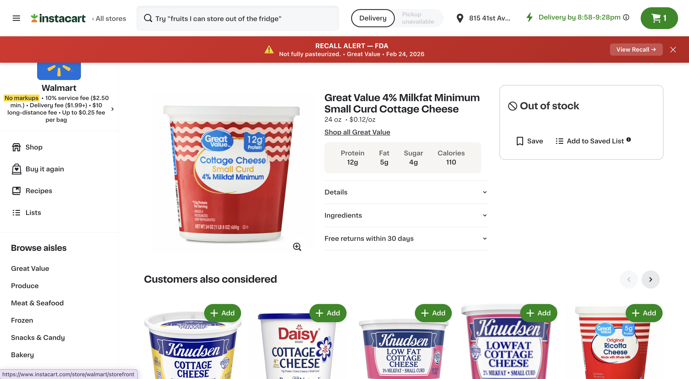
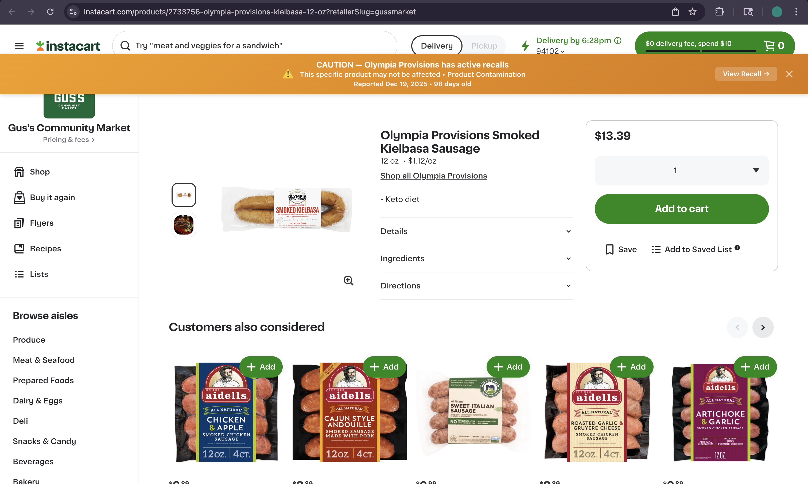
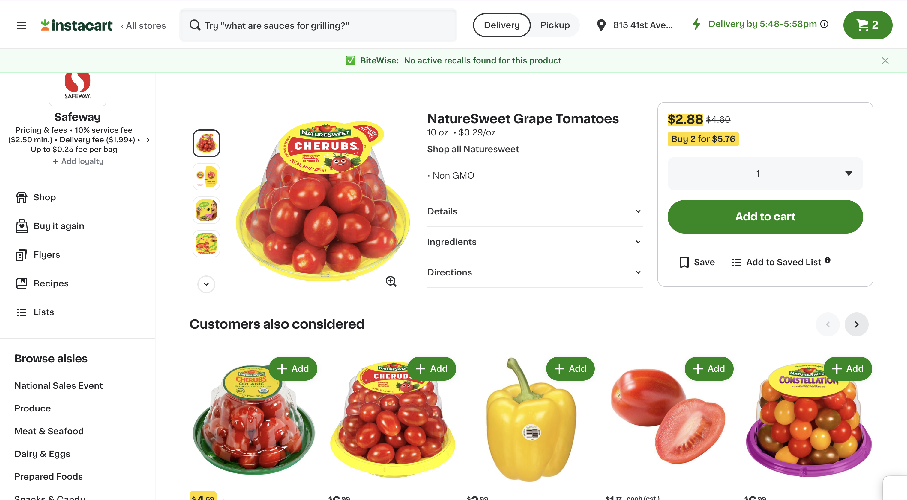
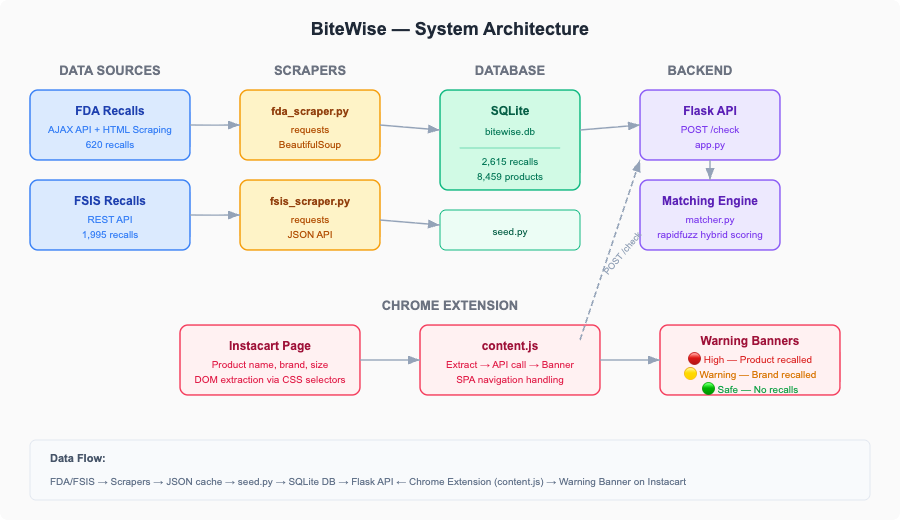

Fragmented public data
Recall notices are published by multiple agencies in different formats, making them hard to unify and hard for consumers to monitor consistently.
Portfolio Project
BiteWise is a full-stack product that turns fragmented government recall data into real-time shopping alerts. It scrapes FDA and USDA FSIS recall records, normalizes them into a searchable database, scores product similarity through a matching API, and displays warnings directly on Instacart product pages.
Project Snapshot
Technologies Used
Core tools used to ingest recall data, score matches, serve the API, and deliver the browser experience.
The Problem
Recall notices are published by multiple agencies in different formats, making them hard to unify and hard for consumers to monitor consistently.
Online grocery platforms usually do not surface recall information directly on product pages, even though that is where the buying decision happens.
Retail product names do not perfectly match recall wording, so a useful solution needs more than exact string comparison.
The Solution
I built BiteWise as a local full-stack prototype that connects public recall data to the online shopping experience. The system collects current recall records, stores them in a normalized SQLite database, exposes a matching API, and lets a browser extension flag relevant products directly on Instacart pages.
The matching logic combines fuzzy similarity with practical guardrails such as company-name downweighting, distinctive token overlap, size checks, and a 180-day freshness window to reduce false positives.
Product Demo

A strong match between the product and an active recall. The shopper gets an immediate warning, a recall date, an age indicator, and a direct link to the official recall notice.

A meaningful but weaker match. This warns the shopper that the brand is linked to a recent recall even if the exact product evidence is less certain.

When BiteWise does not find a relevant active recall, the extension confirms that no active recall match was found for the current product.
How It Works

FDA recall records are scraped from the web, while FSIS records are pulled through a public API.
Recall data is cleaned and loaded into SQLite with separate recall and product tables.
The Flask API compares Instacart products against recent recall records using fuzzy scoring and rule-based safeguards.
The Chrome extension injects a clear status banner directly into the shopping page.
Technologies
Python, Requests, BeautifulSoup
SQLite with a normalized recall and product schema
Flask and Flask-CORS
RapidFuzz plus custom heuristics and guardrails
Chrome Extension (Manifest V3) and vanilla JavaScript
Unit tests for matcher behavior and API responses
How It Can Scale
Extend the browser layer to other grocery and e-commerce platforms with platform-specific selectors.
Move scraping and ingestion to scheduled background jobs so recall data stays continuously updated.
Swap SQLite for a managed database, host the API, and precompute/cache recall candidates for faster lookups.